Фотогалерея
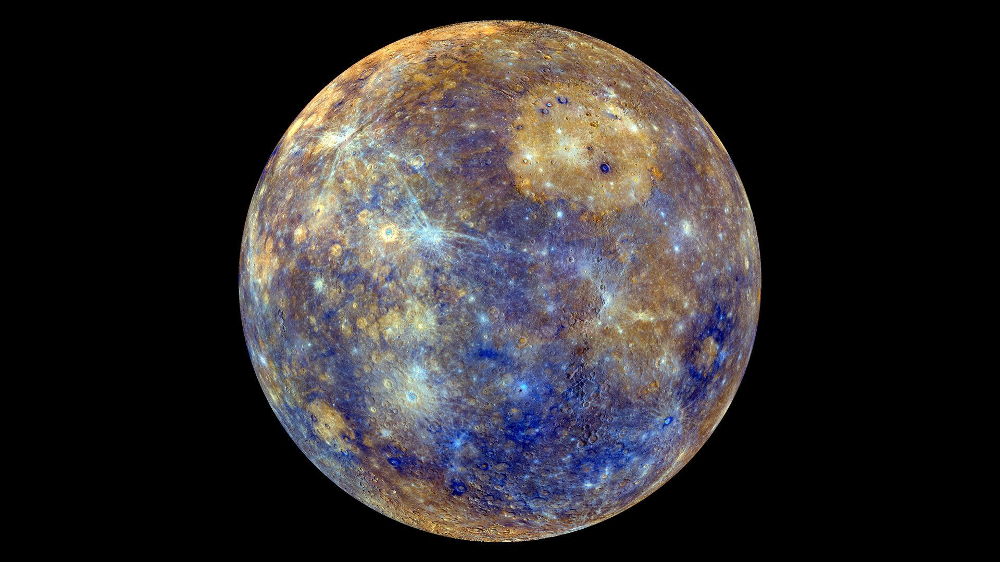
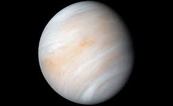
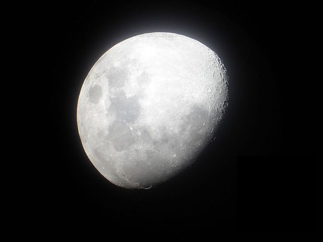
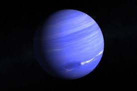

 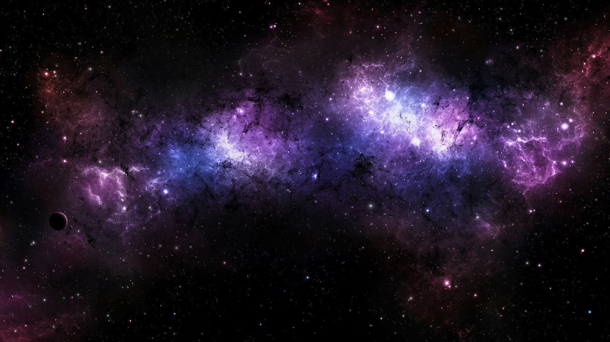
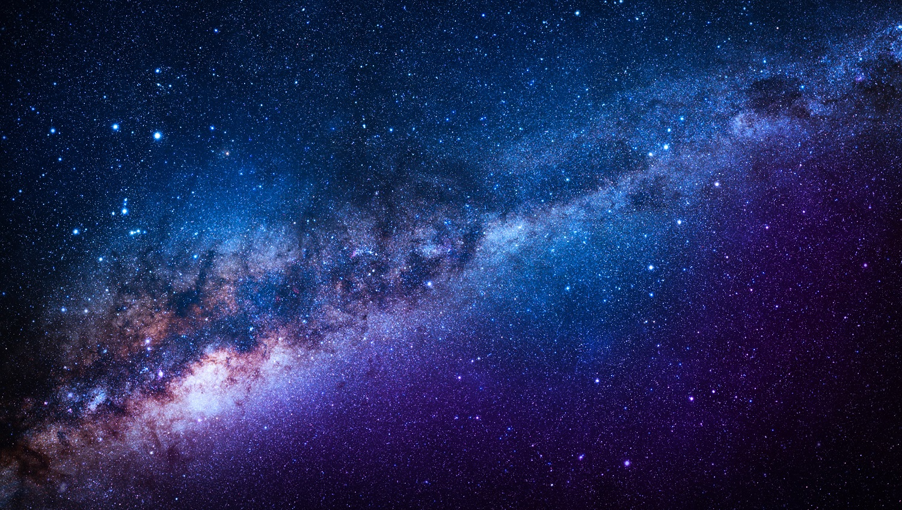
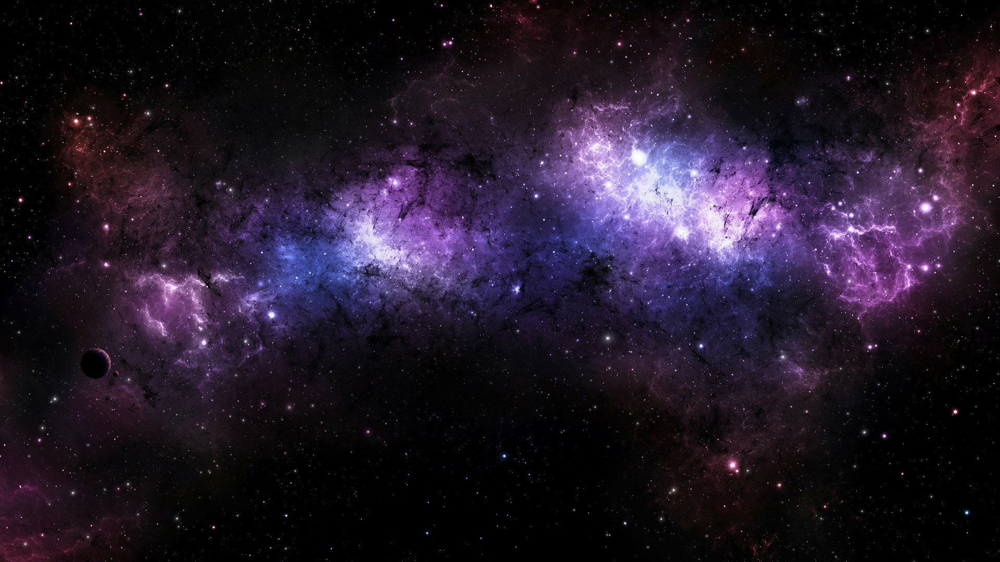
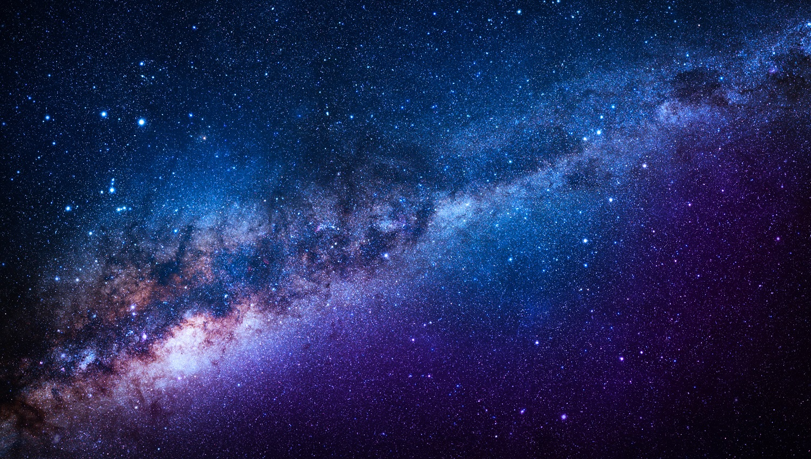

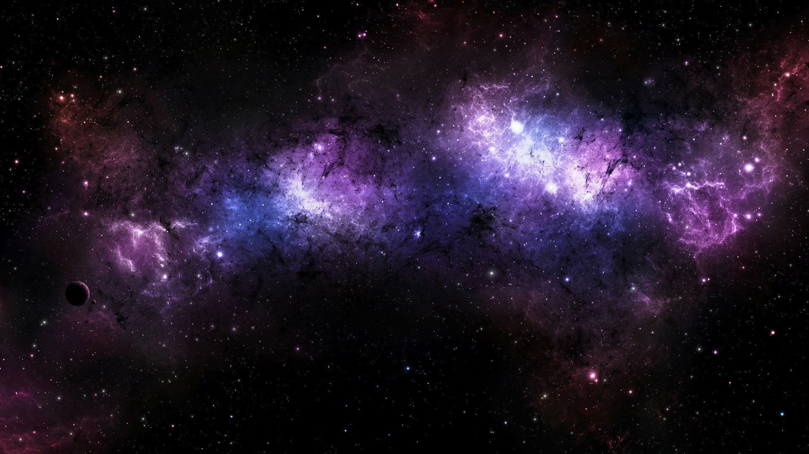
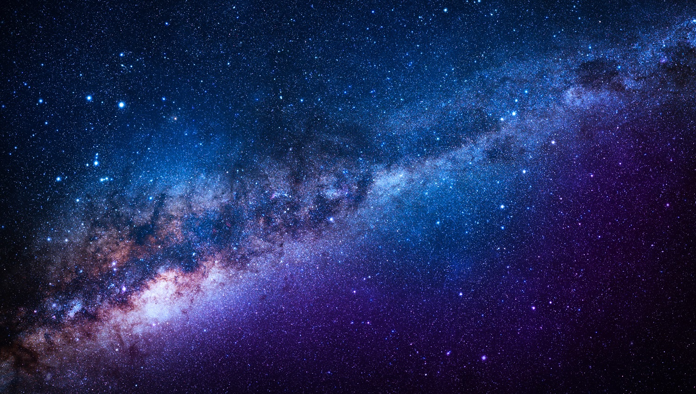
Первый полет человека в космос считается одним из наиболее значимых событий в истории и космической эпохе. Этот исторический момент произошел 12 апреля 1961 года и был выполнен Юрием Алексеевичем Гагариным. Во время этого исторического полета, Юрий Гагарин совершил один оборот вокруг Земли.
ПосмотретьПервым человеком, который ступил на луну, был американский астронавт Нил Армстронг. Это историческое событие произошло 20 июля 1969 года во время миссии Apollo 11. Apollo 11 была космической миссией, организованной американским космическим агентством NASA с целью достижения Луны и высадки астронавтов на ее поверхность.
ПосмотретьБелка и Стрелка были двумя собаками-космонавтами, которые стали первыми животными, успешно вернувшимися с орбиты Земли. Их полет состоялся 19 августа 1960 года в рамках советской космической программы. Белка, самка болонки, и Стрелка, самец-московская сторожевая, были подготовлены и обучены для миссии космического полета.
Посмотреть
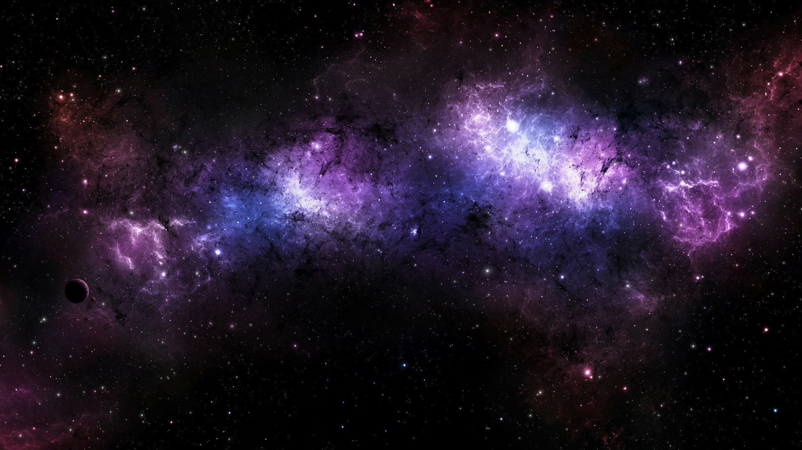
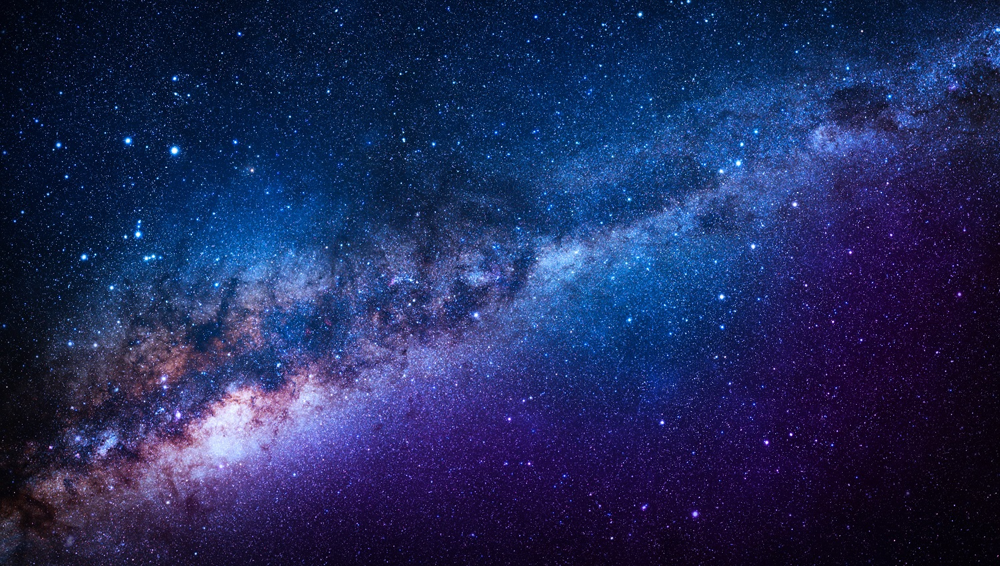
8 апреля 2024 года запланировано полное солнечное затмение, которое будет видимо в некоторых регионах Северной Америки, включая Мексику, США и Канаду. Затмение сопровождается затмительным зрелищем, когда Луна полностью перекрывает Солнце, создавая темноту и выявляя яркий солнечный корону.
8 декабря 2125 года запланирован следующий транзит Венеры. Транзит Венеры происходит, когда Венера проходит между Землей и Солнцем, создавая темную силуэтную точку на поверхности Солнца. Это редкое явление, которое происходит дважды век и обычно имеет интервал в 8 лет между транзитами. Следующий транзит Венеры после 2125 года ожидается только в 2247 году.
Каждый год в середине ноября Земля пересекает орбиту кометы Темпеля-Таттля, что приводит к яркому метеорному потоку Леонидов. Однако в 2033 году ожидается увеличение активности этого потока, что может привести к сильному всплеску метеоров. Если условия будут благоприятными, это может стать незабываемым зрелищем для наблюдателей.
В ближайшие годы ожидается взрыв звезды в нашей галактике Млечный Путь, который может стать ближайшей суперновой, видимой с Земли. Суперновые являются яркими вспышками, возникающими при взрыве массивных звезд, и они предоставляют ученым уникальную возможность изучать физические процессы, происходящие во Вселенной.